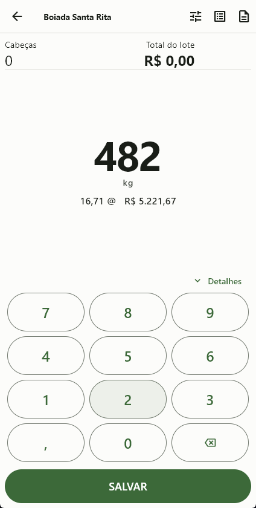
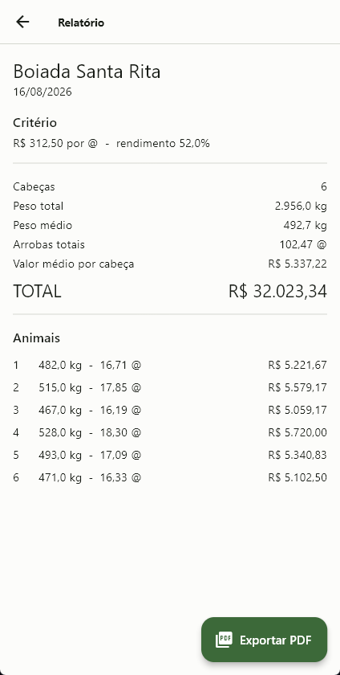
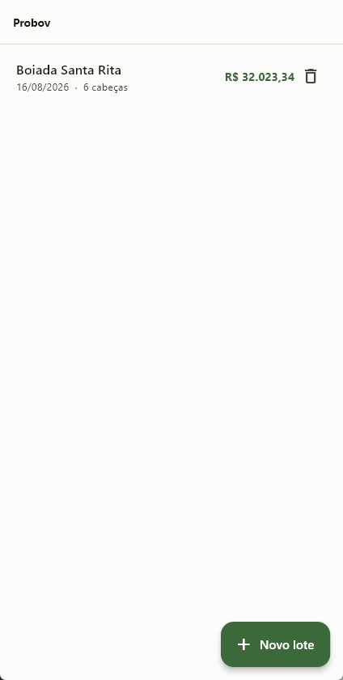
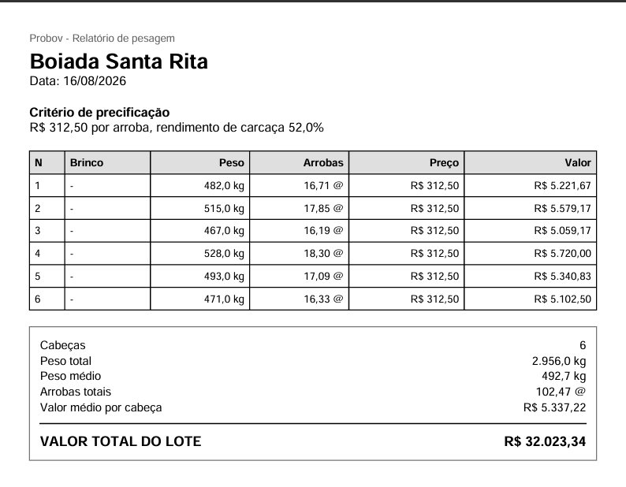

Construo aplicativos que precisam funcionar longe do escritório — sem sinal, com número que não pode errar.
Quem compra e vende gado fecha negócio no curral, com o boi na balança e o celular sem sinal. A conta é feita na hora: peso, rendimento de carcaça, preço da arroba, desconto por lote. Errar centavo aqui, multiplicado por cabeça, vira prejuízo real no fim do dia.
O Probov faz essa conta offline, guarda tudo no aparelho e imprime o relatório em PDF na saída do curral — sem depender de internet em nenhum momento.
Dinheiro em centavos, peso em gramas, arroba em centésimos, percentual em basis points. Toda a aritmética do domínio roda em inteiro e só vira texto na hora de exibir. É a decisão que impede o erro de arredondamento de aparecer três meses depois, quando já virou divergência de fechamento.
// lib/core/format.dart — inteiro entra, texto sai String formatBrl(int centavos) String formatKg(int pesoG) String formatArrobas(int centesimos) // 1664 → 16,64 @ String formatPercentBp(int bp)
Peso digitado errado é rotina no curral. Ao corrigir, o relatório inteiro se refaz — totais, médias e valores por lote — porque ele é estado derivado, não cópia salva. Ninguém precisa lembrar de recalcular nada.
Persistência local em SQLite com Drift, schema com exclusão em cascata, e uma suíte que abre um banco em memória a cada teste. O domínio é coberto isoladamente: unidades, parsing, precificação e geração do PDF têm teste próprio.
O histórico do repositório mostra o método — a especificação do domínio veio primeiro, depois o plano dividido em 16 tarefas, e só então a implementação camada por camada. As dependências têm versão fixada com o motivo escrito ao lado, para o próximo desenvolvedor não desfazer sem saber.




Monorepo próprio com backend em Node, documentação versionada junto do código e convenções de contribuição escritas — para o projeto seguir legível quando outra pessoa entrar nele.
Desenvolvimento em C# com UI Toolkit e prefabs, e a arte em pixel feita por mim no Aseprite: sprites, animação e tilesets. Programo e desenho o mesmo projeto, o que elimina a ida e volta entre dev e artista.
Pipelines que ligam ferramentas que não se falam: n8n em Docker, automação de mídia com ffmpeg, integração com APIs de IA e servidores MCP. Bom para quem tem processo manual repetido todo dia.
Modelagem de domínio, banco local, testes, ícone, identificador de pacote e
build assinado. O Probov saiu como br.com.probov — produto
empacotado, não protótipo.
Antes de qualquer tela, eu aprendo a regra do seu negócio — como o preço se forma, o que é exceção, onde erra hoje. É essa parte que decide se o app serve ou atrapalha.
Você recebe por escrito o que será construído e em que ordem, dividido em entregas pequenas. Dá para cortar escopo com clareza em vez de descobrir no fim que faltou o essencial.
A regra de negócio nasce coberta por teste. Quando você pedir mudança no terceiro mês, a mudança não quebra silenciosamente o que já funcionava.
App assinado, pronto para a loja ou distribuição interna, com o código documentado o suficiente para outra pessoa continuar. Sem dependência de mim para o projeto seguir vivo.